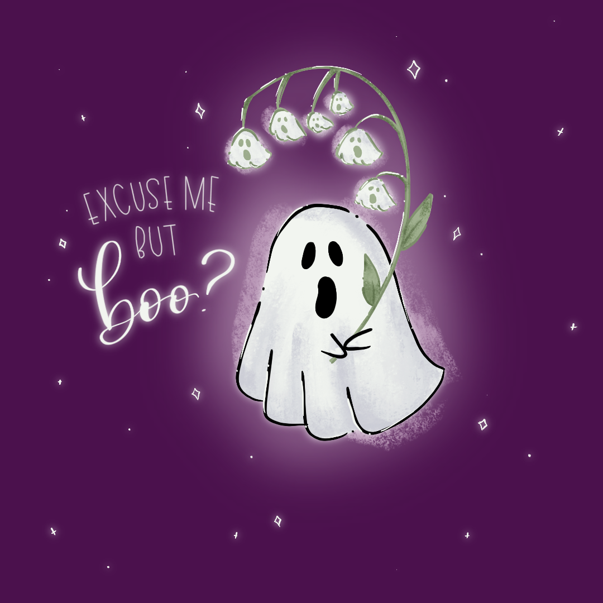
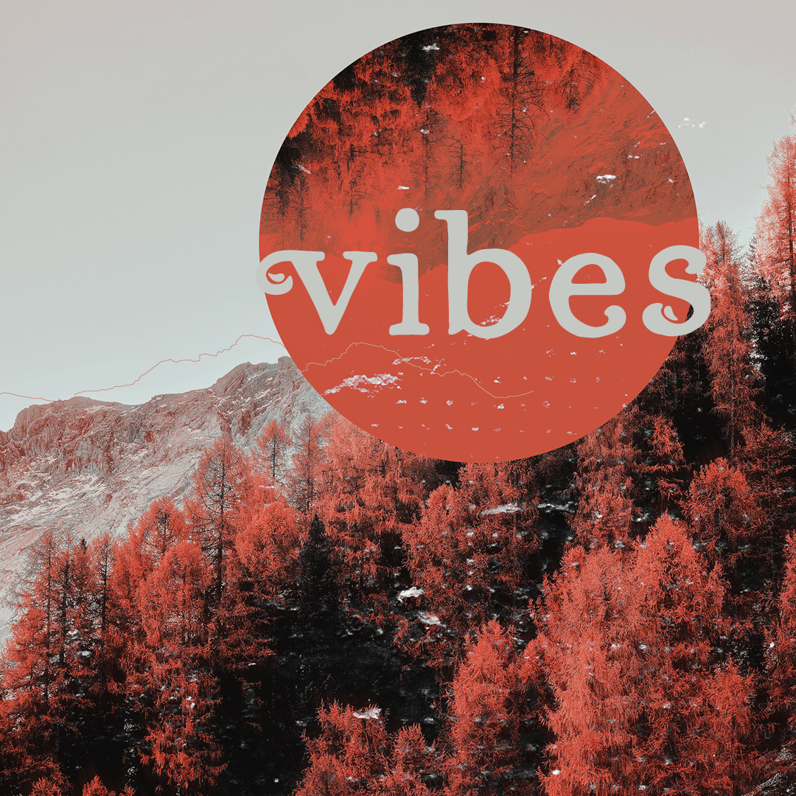
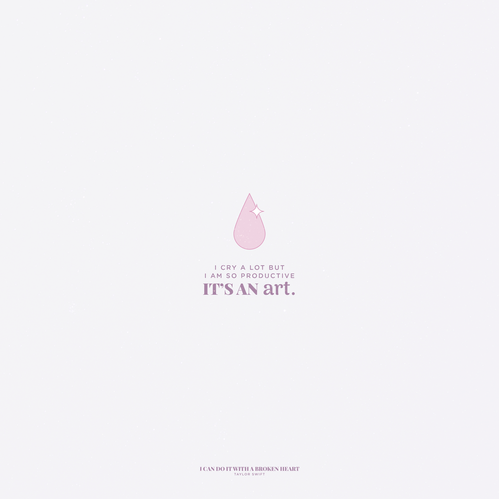
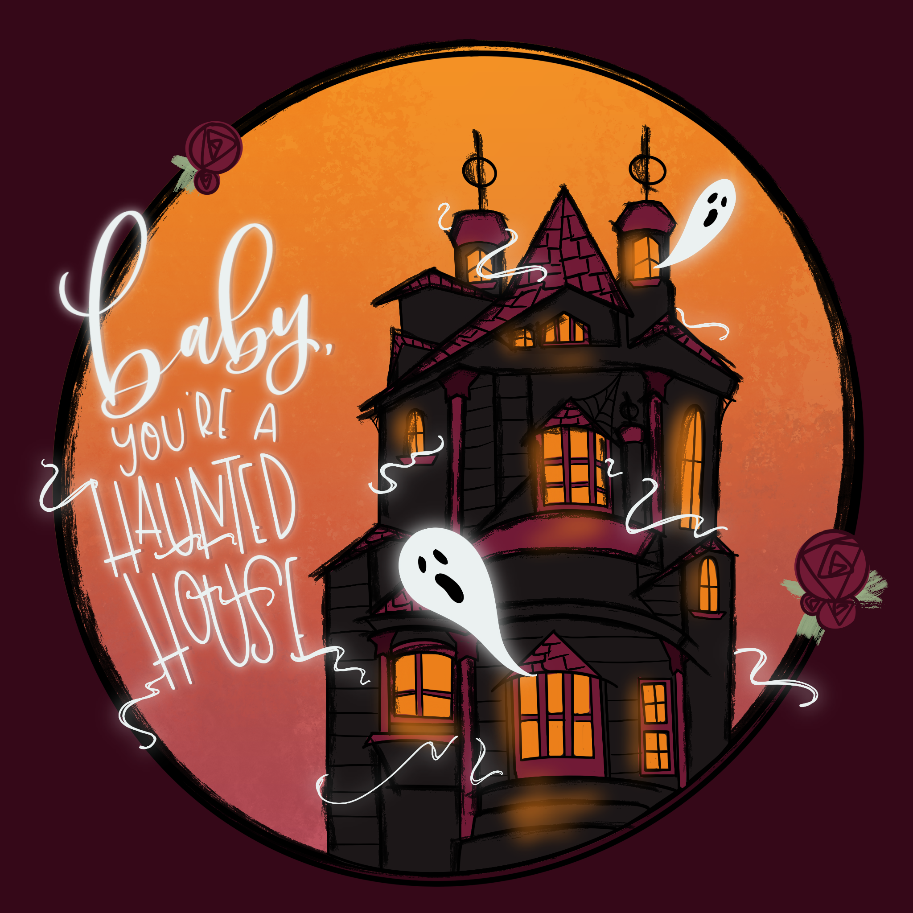
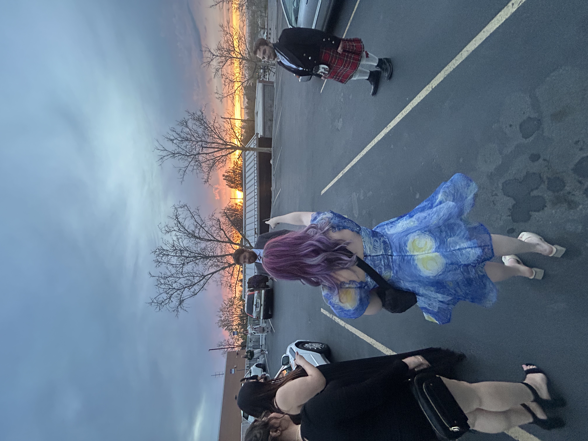
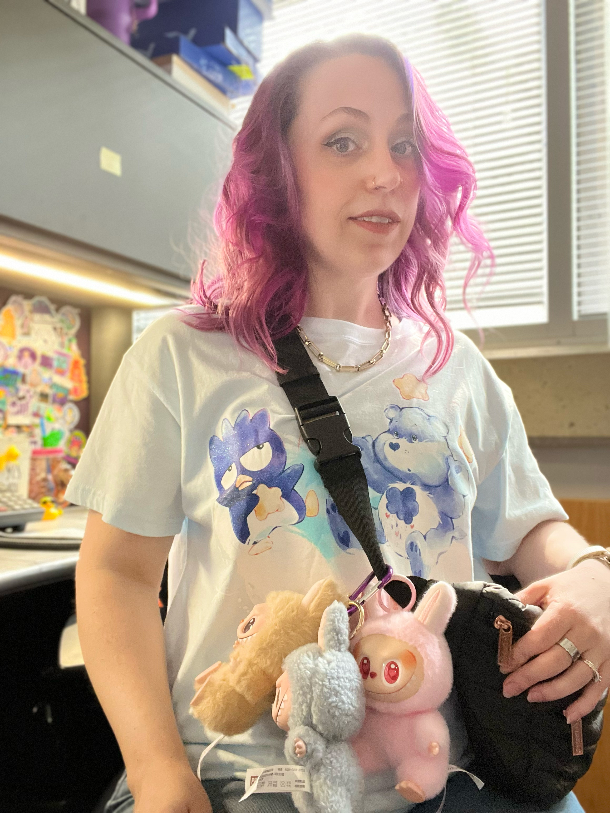
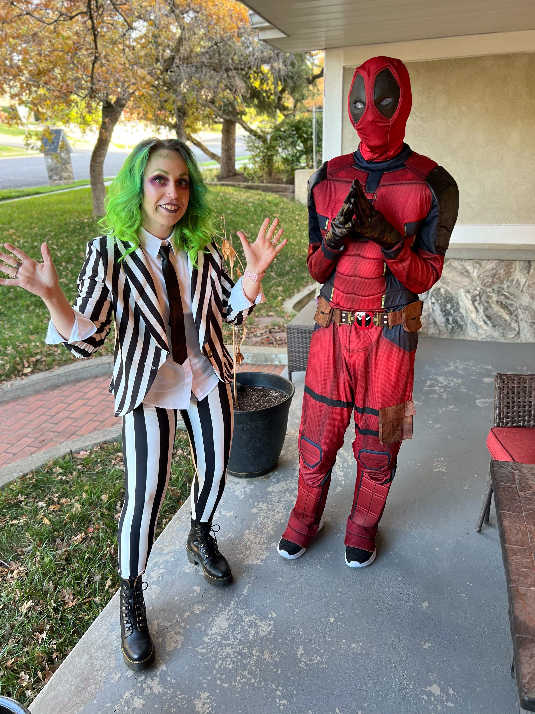

Hey! I'm Alicia.
I am a graduate from Weber State University, having earned my BFA in graphic design with departmental honors in visual arts and graduated Magna Cum Laude. I was also the recipient of the Outstanding Graduate in Graphic Design award. I have 10+ years of industry experience, I am a spooky season enthusiast, kind of a gym rat, an elder emo, and a lover of coffee and unicorns.
How I Got Here
I think most who chose art school were defined as the creative child. As a displaced teen finding herself in Utah, I found an early interest in graphic design through Neopets, of all places. I saw people creating graphics, coding their pet pages, and designing Neosignatures, and it caught my attention. I started teaching myself, pushing program capabilities by using Paint originally—I didn't have layer capabilities and blending modes! Eventually I moved onto Paint Shop Pro and am now quite comfortable in the Adobe Creative Suite, but I remember those humble beginnings.
Creating for Fun
When I'm not client-facing, you'll find me lettering, illustrating, or making things just for the joy of it.




The Designer Behind the Scenes
A few glimpses of me in my element.


